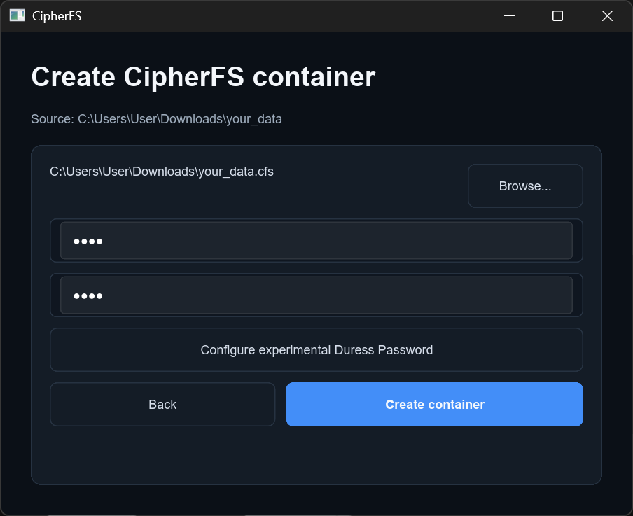
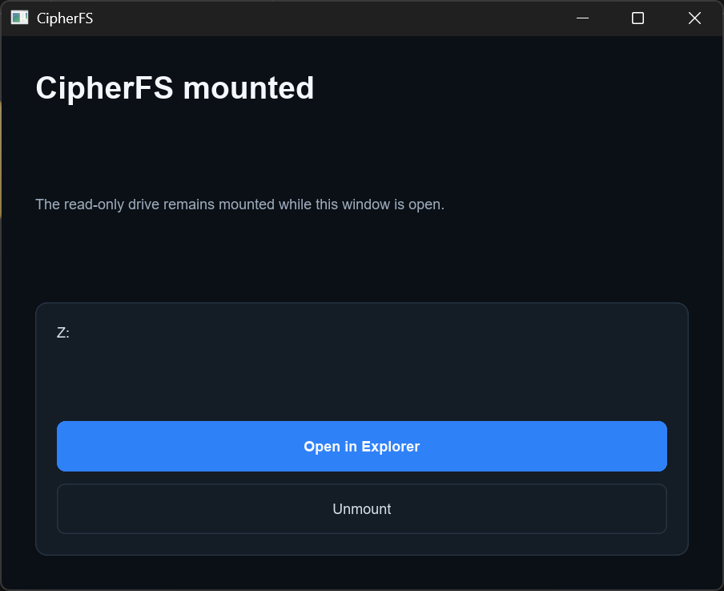
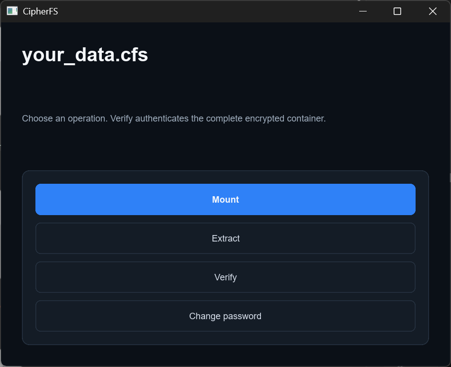
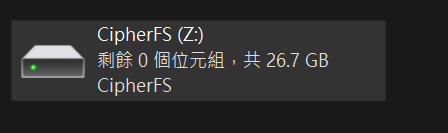

01 / 建立容器從右鍵開始，

從右鍵開始，
收進一個檔案。
選取資料夾，使用 Pack with CipherFS，選擇輸出位置並設定密碼，即可建立單一 .cfs 容器。
Windows 11 的指令位於「顯示其他選項」。

CipherFS / Windows x64
把資料夾封裝成加密的 .cfs 容器。需要使用時，直接掛載成唯讀磁碟，不必先完整解開。

從資料夾開始
封裝、開啟與瀏覽，都從 Windows 檔案總管接續進行。
選取資料夾，使用 Pack with CipherFS，選擇輸出位置並設定密碼，即可建立單一 .cfs 容器。
Windows 11 的指令位於「顯示其他選項」。

雙擊 .cfs 檔案，選擇這次需要的操作。

透過 WinFsp，容器會出現在獨立的磁碟機代號中。瀏覽時保持唯讀，不會改動容器內容。
掛載期間保持 Shell 視窗開啟，完成後按「Unmount」卸載。
閱讀完整使用說明 ↗
像開啟磁碟一樣，瀏覽加密容器。
簡單，也透明
封裝、掛載與驗證不需要把檔案上傳到雲端。
資料夾整理成一個 .cfs 檔案，方便移動與保存。
程式碼、容器格式與測試方式，都能在 GitHub 檢視。
CipherFS for Windows